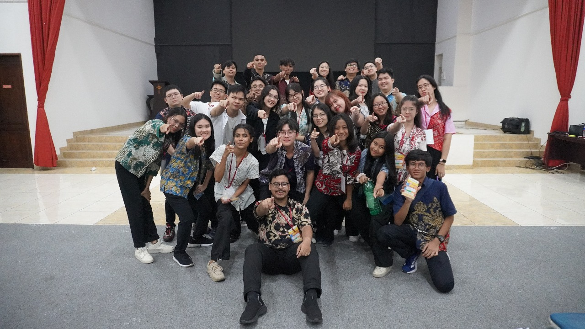
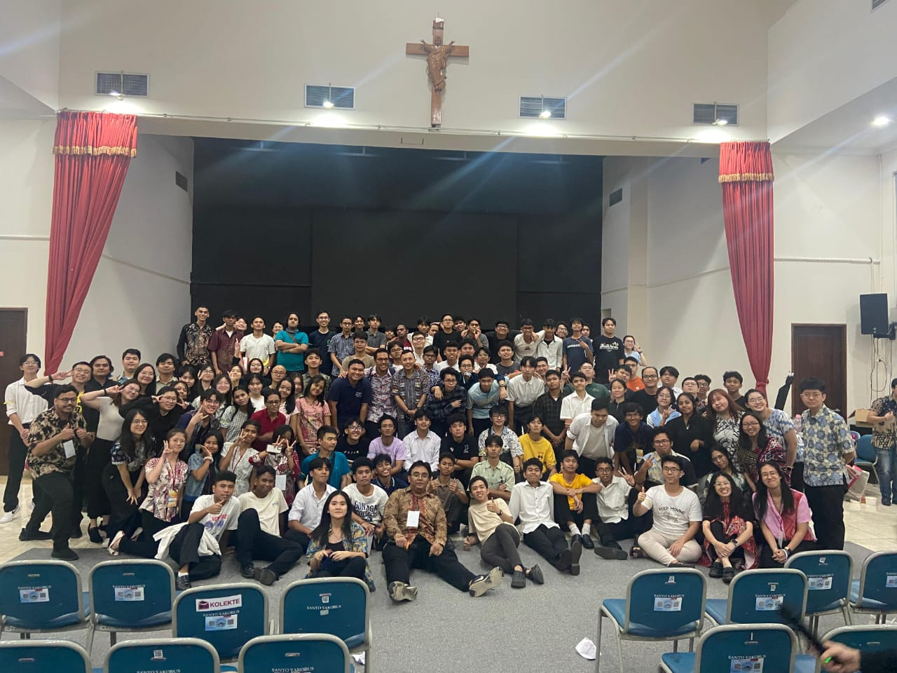

Catholic Youth various subsections and events crew
2022-currently
I'm fairly active in my church, St. Andrew Kim Taegon Catholic Church, especially in the youth section. I started being active in the youth section in 2022, and I've been crewing in many events and subsections since. I'm the coordinator of the youth mass team who handles youth mass and the afterparty afterwards which being held once a month, and I was the president of youth kolintang subsection for 3 years. Other than that, I was also a coordinator of the consumption, medical, and registration division in the Bible Month event. I was in the live recreation of the Passion of Christ twice, in 2024 and 2025, once as crew team in makeup and constume, and once as vice coordinator of the whole thing. I also was the secretary of Christmas Market event we held at church. I'm still currently active as coordinator of youth mass team, and I recently joined my church's Youth Affairs Management Division which I will discuss in another page, and will continue to be active in foreseeable future.

